Eating Our Way through the BBQ States
August 14, 2017
The best thing about traveling through the South is the ability to eat amazing barbecue any time we want. After traversing North Carolina, Tennessee, Arkansas, and Texas in the past 2 weeks, we've compiled a list of the BBQ joints we've visited so far. From ribs to pulled pork, mac n' cheese to collard greens, we've had it all and still aren't sick of it.
Moe's Original Bar B Que
Charlotte, North Carolina
To Nick's extreme dismay, we didn't stop at any real Carolina-style barbecue joints. However, we did still have great barbecue in the Tar Heel state. We started by visiting Moe's in Charlotte. This Southern chain was started in Colorado by Alabamians, and has some seriously delicious meat. Nick had the pulled pork with coleslaw and banana pudding, while Jackie had ribs, mac n' cheese, and collard greens. One of Moe's pros was that every meal comes with cornbread included.
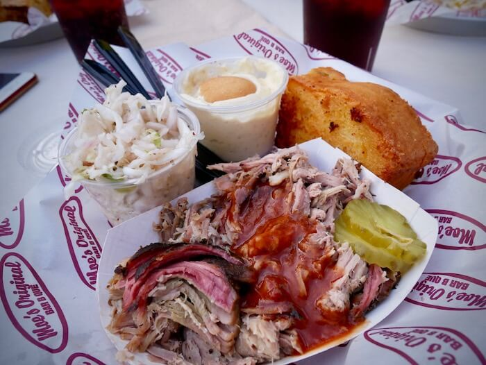Cook Out
Asheville, North Carolina
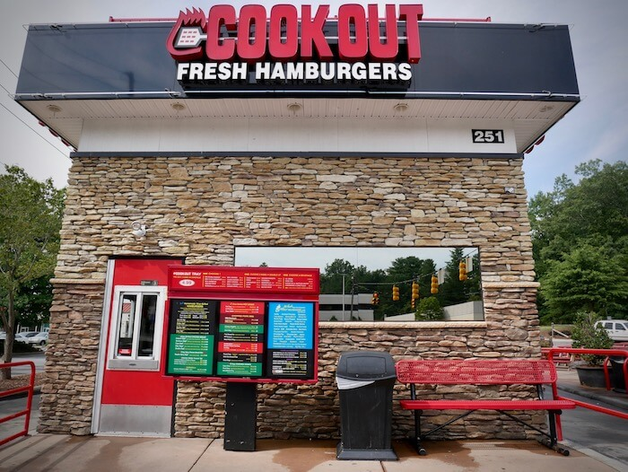OK, so Cook Out isn't exactly a barbecue joint. It's an everything joint. The Cook Out menu is huge. But we did actually get a pulled pork sandwich here - as well as a burger, fries, onion rings, hushpuppies, chili, a large Cheerwine, and and a mint chocolate chip shake - all for under $13. Yes, you read that correctly. There's a reason North Carolinians are crazy about Cook Out. It's the ultimate in greasy, delicious, and amazingly cheap fast food; and it's open until 2am. The highlight of our meal was definitely the Cook Out burger, topped with dollops of chili and coleslaw. The pulled pork fell short of comparing to those from the other restaurants on this list, but at Cook Out's prices we really can't complain.
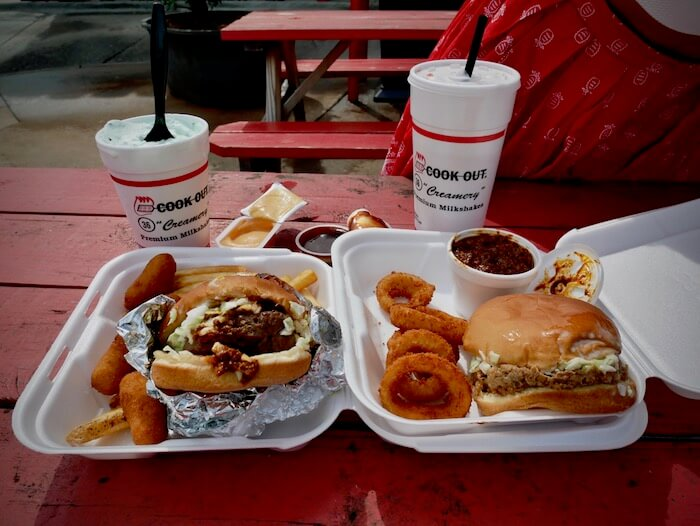Helen's Bar BQ
Brownsville, Tennessee
Helen's tops our list for charm. Located approximately in the middle of nowhere, too far from Memphis, this little joint is essentially a one-woman operation. It looks exactly how you'd picture an authentic, small town, hole-in-the-wall southern barbecue restaurant. When we walked in, Helen's husband was sitting at one of only 2 tables in the place, watching a re-run of a college football game.
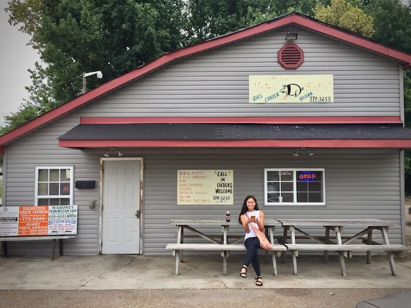After ordering, we sat back down next to him and he asked where we were from. We told him about our roadtrip and he said that he and Helen travel a lot too for barbecue competitions. Unlike us, however, they don't drive becasue, as he informed us, he sleeps better behind the wheel than anywhere else.
Then Helen brought us our food: a rib sandwhich for Jackie and a pulled pork sandwich for Nick. There's a reason why she has made such a name for herself; the meat was just perfect. We especially loved the sauce because its syrupy sweetness reminded us of our hometown mumbo sauce.
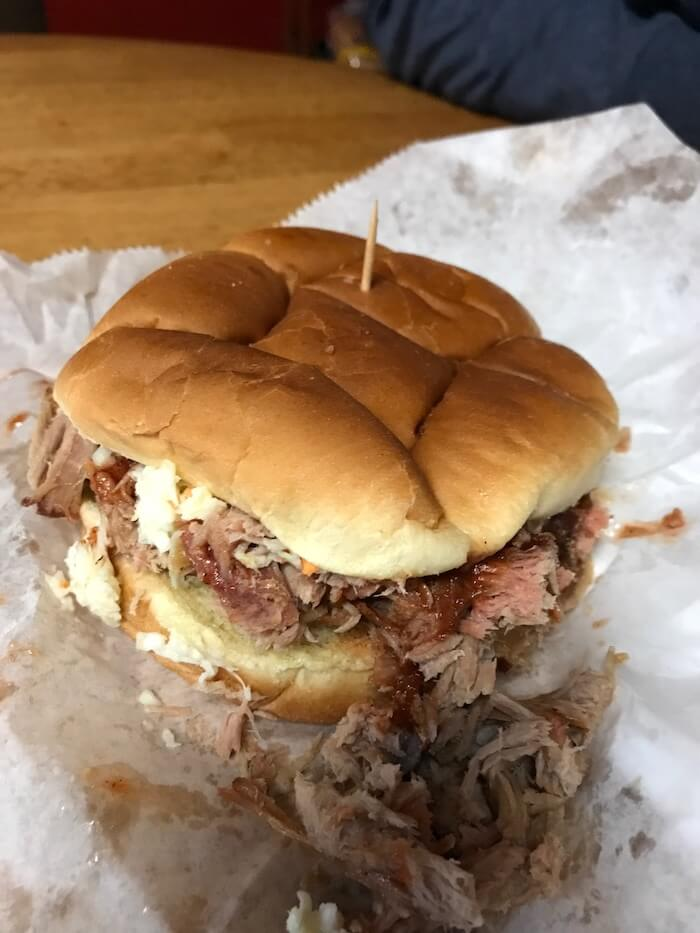Just as we were leaving, Helen ran out and stopped us; we needed to sign her guestbook. Consisting of lined paper in a three-ringed binder, this book contained notes of praise from customers hailing from all over the US and even the world. One person from Germany wrote that they had come all the way to Helen's after seeing her interviewed on German television. We left our names and hometowns and thanked her for the best spicy pork we could ever ask for.
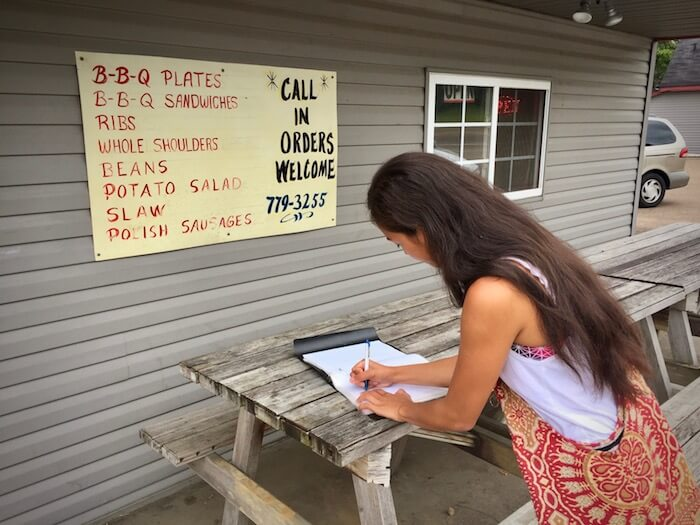Terry Black's Barbecue
Austin, Texas
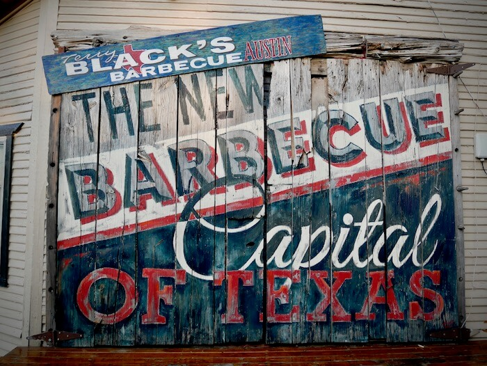Overall, Texas barbecue has to be our favorite. Terry Black's cafeteria style allowed us to fill up on sides like green beans, mac n' cheese, pecan pie, and potato salad. The main course was even better, consisting of pork ribs and the juciest brisket imaginable. At Terry Black's, it's all about the meat. If you choose to add sauce you only have 2 options: regular or spicy. Shared with friends, this meal was unbeatable. A small drawback was the price. At $20 a person, it's reasonable, but isn't something we'd splurge on too often.
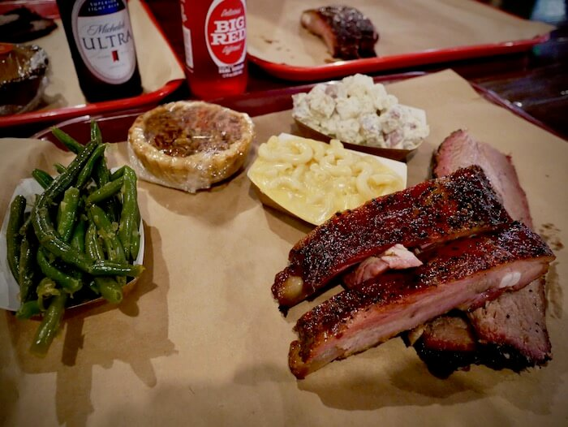 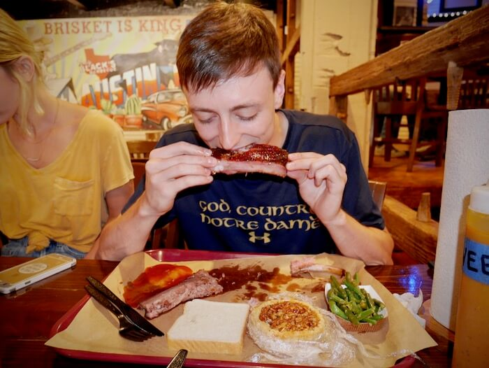Honorable Mention:
Hattie B's Hot Chicken
Nashville, Tennessee
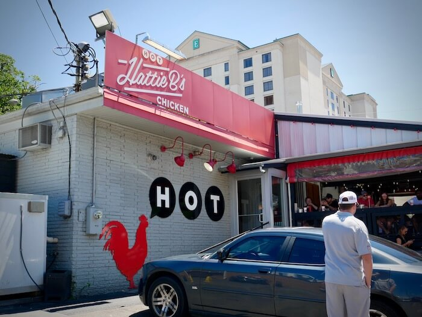No, fried chicken isn't barbecue, but Hattie B's was just too delicious not to write about. Plus, with sides like collard greens, mac n' cheese, potato salad, and black-eyed pea salad, it's not that out of place here. But the real star of Hattie B's is the chicken. We ordered a dark meat platter, tenders, and an extra wing. Mild spices conferred the perfect burn, and the breading was audibly crunchy while still being thin. The meat itslef was mouth-wateringly moist and if we lived in Nashville we might eat here everyday if there wasn't a consistent 2+ hour wait.
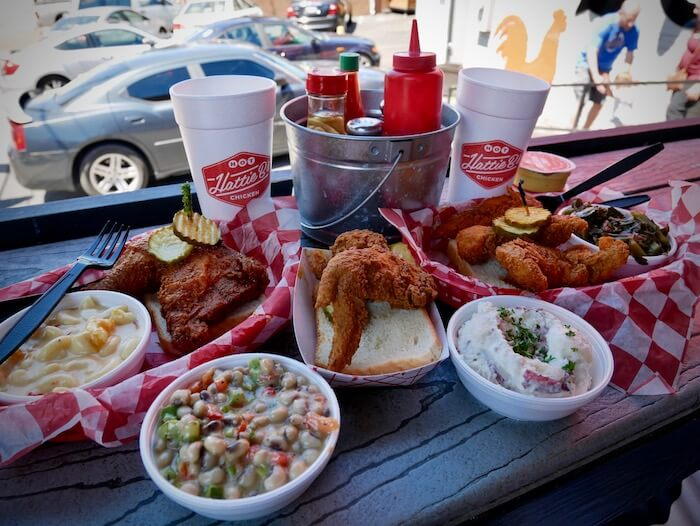